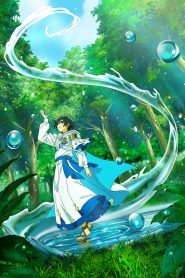

<div class="conteudo-principal">
<div class="anime-header">
    <LINK rel="stylesheet" href="all_animes.css"></LINK>
     <!-- Coloque o poster aqui -->
    <div class="info">
        <h1>Tate no Yuusha</h1>
        <p class="ano">2025</p>
        <div class="rating">⭐ 0</div>
        <div class="tags">     </div>
        <p class="sinopse">
       Ryo está encantado por ter renascido no mundo fantástico de Phi, onde acredita que poderá levar uma vida tranquila aprendendo a usar sua recém-descoberta magia d’água. No entanto, “seguir o fluxo” aqui tem um significado bastante diferente. Ryo logo se vê enfrentando as terras selvagens de onde foi parar e uma enxurrada de monstros mortais que habitam esse remoto subcontinente. Você pensaria que ele deixaria para lá a ideia de levar uma vida fácil enquanto luta para sobreviver, mas, por sorte, Ryo é naturalmente otimista, esperto e abençoado com o traço oculto da “Juventude Eterna”. 20 anos passam num piscar de olhos, e cada desafio pelo caminho o aproxima mais do ápice da magia humana. Mal sabe ele que isso é apenas o início de sua história. Um encontro decisivo o colocará no centro dos acontecimentos históricos, mudando para sempre o curso de sua vida! Assim começam as aventuras do mago d’água mais poderoso que o mundo já viu, que também gosta de fazer as coisas no seu próprio ritmo!</div>

    <!-- 2. CONTAINER DE EPISÓDIOS -->
    <div class="episodios-container">
        <div class="temporada-btn">Temporada 1</div>
        
        <div id="lista-episodios">
            <!-- O JS vai gerar os .ep-card aqui dentro -->
        </div>
    </div>

    <script>
        const container = document.getElementById('lista-episodios');
        const pastaThumb = "mizu_zokusei"; // Nome da pasta das suas miniaturas
        const nomeAnime = "mizu_zokusei";

     const idsGoogleDrive = {
      
     };
 
        const totalepisodios = 12;

        for (let i = 1; i <= totalepisodios; i++) {
            const div = document.createElement('div');
            div.className = 'ep-card';
            
            div.onclick = () => {
                const idDrive = idsGoogleDrive[i];
                
                if (!idDrive || idDrive === "ID_AQUI") {
                    alert("Este episódio ainda não está disponível!");
                    return;
                }

                // Link de Preview do Drive (Funciona com o <iframe> do seu player)
                const urlVideoParaOPlayer = `https://drive.google.com/file/d/${idDrive}/preview`;
                const idUnico = `Mizu Zokusei no Mahoutsukai{i}`;
                const caminhoPlayer = "../player.html";
                const nomeepisodio = `${nomeAnime} - Episódio ${i}`;

                window.location.href = `${caminhoPlayer}?id=${idUnico}&url=${encodeURIComponent(urlVideoParaOPlayer)}&titulo=${encodeURIComponent(nomeepisodio)}`;
            };

            // Estrutura interna do card para combinar com o CSS
            div.innerHTML = `
                <div class="ep-thumb" style="background-image: url('../pngs/minicap/${pastaThumb}/ep${i}.jpg');">
                </div>
                <p>Episódio ${i}</p>
            `;

            container.appendChild(div);
        }
    </script>
</body>
</html>
